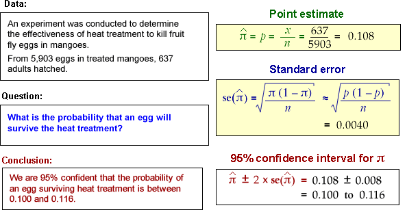

Interpretation of a confidence interval
95% confidence intervals for probabilities are interpreted in a similar way to those for population means.
In practice we cannot tell whether or not the confidence interval that we obtain actually includes the unknown population probability. However knowing that confidence intervals obtained in this way will usually include π is very helpful. In practice,...
Being right most of the time is the best one can hope for, since there is always the possibility of being misled by an unlucky sample.
The method that we use to obtain the confidence interval has probability 0.95 of including π. We cannot tell whether the single interval that we evaluate from our data set is one of these 'lucky' intervals, but knowing that the method works so often gives us 95% confidence in this interval.
Examples
The following data sets give examples of the calculations for obtaining 95% confidence intervals and the conclusions that we can draw from them.
